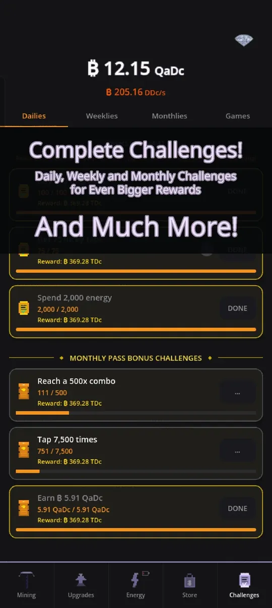
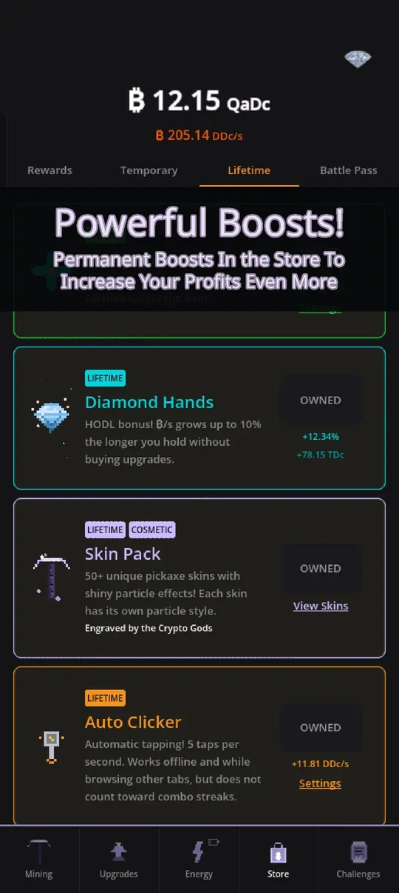
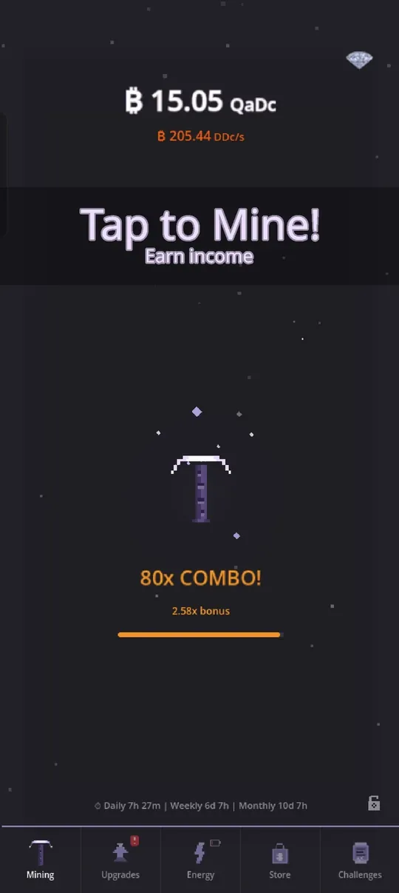

Is Crypto Mining Tycoon worth playing? As the developer I am biased, so I will try to answer is Crypto Mining Tycoon worth playing the way I would want it answered as a player: what you get, what the game asks of you, what the store offers, and who will probably not enjoy it. You can judge for yourself on Google Play.
What kind of game is it?
It is an idle clicker for Android. You tap a pickaxe, buy mining rigs that earn passive income, reset with Prestige and Ascension for permanent multipliers, and work through side systems like energy, artifacts, research and challenges. It is not real crypto, there is no wallet and no money can be earned. If you want the genre background, read idle clicker games explained.
What you get for free
The core game needs no purchase. These all work from the start or from regular play:
- Tapping with a combo multiplier, and the full Upgrades ladder.
- Prestige and Ascension, including shard upgrades.
- Energy plants, modes and bursts.
- The Mining Rig with artifacts, plus the Lab and Staff after your first prestige.
- Daily, weekly and monthly challenges, four mini games and a daily login streak.
- Offline earnings, up to 12 hours by default.
- 12 languages and a built-in Support chat that reaches me.

What the store sells
There is a store, and I want to be clear about what is in it. Most items are shortcuts or cosmetics, not locked content. Examples from the Lifetime tab: Diamond Hands (an income bonus that grows up to 10 percent the longer you hold without buying upgrades), a Skin Pack with 50+ pickaxe skins and particle effects, and an Auto Clicker that taps 5 times per second, also while you are offline or on other tabs, but does not count toward combo streaks.

Other items include temporary Mega Packs (Bull Run, To the Moon and Whale Vault), a monthly Battle Pass with new rewards each month, the Offline Vault that raises the offline cap to 24 hours, and the Whale Card, a big lifetime pack with x3 income, an extra energy mode slot and the VIP daily boost. Automation Suite adds Smart Buy, auto-buy and auto-prestige. These speed you up, and I will not pretend otherwise: if you pay, you progress faster. If you do not, you reach the same content more slowly. Ads in the game are rewarded, so you choose to watch them for a bonus.
Who will enjoy it
- You like watching numbers grow and planning the next reset.
- You like systems that interact: energy modes, artifact sets, research branches, managers.
- You want short sessions with a reason to return, such as challenges and the daily boss raid, where a new boss shows up each day and you tap it down in 30 seconds.
- You want a game in your own language: English, Dutch, Spanish, French, German, Portuguese, Japanese, Korean, Chinese, Russian, Italian or Turkish.
Who may not
- You want a story, characters or fast action. This is a numbers game.
- You dislike resets. Prestige is the heart of the game, and it asks you to start over many times.
- You dislike any in-app store, even an optional one.
How deep does it go?
Deeper than the first ten minutes suggest. Early on you tap and buy. After your first prestige the Lab and managers appear, and Ascension brings Quantum Shards and later power plants. The tree, the artifacts and the seasons (four-week themes with milestone rewards and an exclusive artifact) give you goals long after the first prestiges. The screenshot below is a mid-game account, with a coin total in the quadrillions.

For the systems in detail see how to progress faster and prestige and ascension explained. New players should start with the beginner tips.
My honest verdict
If the genre appeals to you, it is worth an evening. The free game is complete and fair to play, and you will know within a few prestiges whether the loop grabs you. If it does not, uninstalling costs you nothing.
What has changed recently
The game has been updated regularly since release. A recent update added artifact families with set bonuses, the Lab with Research Points, six hireable managers, mining contracts, a daily boss raid, seasons and a Codex collection book. Earlier updates added Mega Packs and lifetime packs, daily backups with a 30-day history and a date picker in Settings, and cloud save through Google Play Games, so your progress is not tied to one phone. You can also export your save as a code and import it later.
I mention this because "worth playing" is partly about whether a game is looked after. Bugs are fixed, and the Support chat in Settings goes to me directly.
Questions I get from new players
The most common one is whether the game is really about crypto. It is not: the coins are in-game currency and the theme is just a mining fantasy. The second one is whether you need to play every day. You do not. The offline cap of 12 hours exists so that one or two check-ins a day are enough, and the daily login streak and challenges are bonuses, not obligations. If you miss a day, your rigs still produced income while you were away.
Try it
Install Crypto Mining Tycoon from Google Play, play until your first prestige, and decide then. I read the feedback sent through the in-game chat, and it has shaped many updates.
Frequently Asked Questions
Do I need to buy anything to play Crypto Mining Tycoon?
No. The core game, including prestige, energy, artifacts, research and challenges, is playable without buying anything. The store offers shortcuts and cosmetics that make progress faster.
Are the ads forced?
The ads in the game are rewarded: you choose to watch one to claim a bonus, such as a boost or extra offline earnings. Nothing in the core game requires you to watch ads to progress.
Does Crypto Mining Tycoon work offline?
Your rigs keep earning while the app is closed, and you can collect up to 12 hours of income when you return. The Offline Vault and the Whale Card raise that cap to 24 hours.